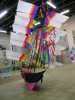
D'abord, l'exposition indoor : le bateau de 3 m de haut déjà vu à Dieppe...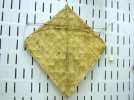
Le cerf-volant de pêcheur en feuilles cousues...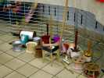
Les dévidoirs indiens d'Abdul...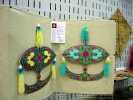
Aussi des Wau-Lune en dentelle de papier découpé... Travail difficile à croire pour des européens, faut toucher !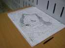
Certains copient (facile, on décalque directement) les cerfs-volants chinois ornés de samouraïs impressionnants !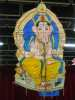
Un cerf-volant indien a l'air assez ancien, en tous cas avec des heures de vol...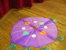
Des combattants classiques, et d'autres assez spéciaux...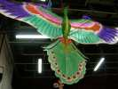
Des grues chinoises avec de grandes papattes articulées...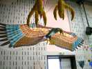
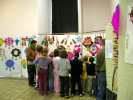
Les enfants des écoles viendront par groupe se passionner pour les cerfs-volants et suivront avec attention les explications des initiateurs...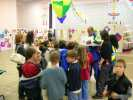
Ezéquiel présente aussi ses créations avec un français plus que limité, mais son accent est attirant....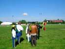
Sur le terrain ça vole, avec un double pipa, création d'Ezéquiel !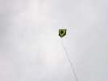
Des pipas de taille métrique voleront aussi en statique, celui-ci....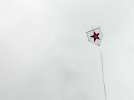
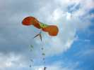
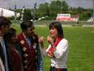
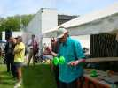
Il y a bien entendu l'équipe de Jim avec des diabolos, des toupies, des yoyos... et une adresse phénoménale !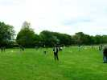
Les enfants font enfin voler les cerfs-volants qu'ils ont fabriqués sous la houlette de Ludo ("je veux pas voir un scotch collé ailleurs qu'ici !")...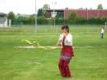
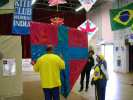
Pour Marines, Ezéquiel fabriquera un pipa qui fera bien 3 m de haut !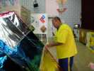
On finit les tendeurs pour lui donner sa courbure, comme un rokkaku...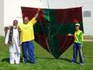
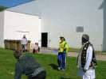
Juliana arrive avec la queue...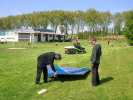
...Dom attache la ligne, ...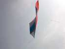
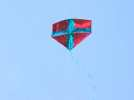
Le vol est bien stable pour le moment...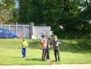
Mais avec une queue maintenant "raisonnable", il vole tout à fait stable !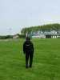
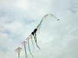
Govert lance une bonne part de son train.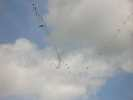
Mais Ludo fait pareil de son coté, et avec le vent turbulent, ce qui devait arriver arrive !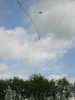
Mais ça fait de jolis dessins dans le ciel, comme une arche très haute...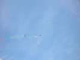
Et ça dessine des figures artistiques...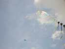
Celle-ci...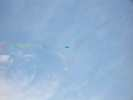
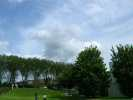
En plus, il s'accroche dans d'autres arbres !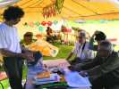
Ceux que ça intéresse auront aussi un petit briefing sur la photo par cerf-volant, par Joël Mater.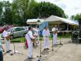
Un orchestre plus exotique que les pompiers animera toute la fin de la journée...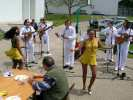
Ils partiront à six heures, mais les danseuses resteront ce soir !